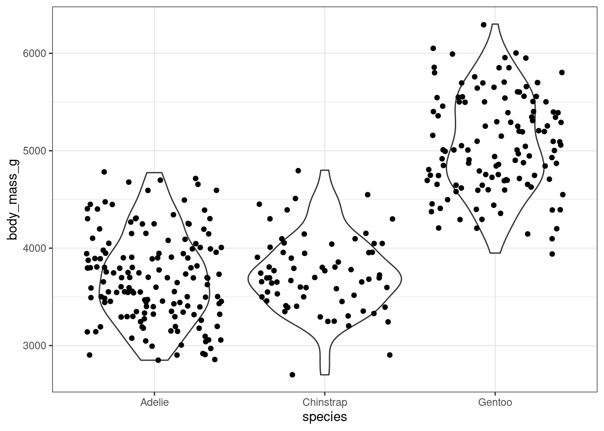

Warning: Removed 2 rows containing missing values or values outside the scale range
(`geom_point()`).
theme_set(theme_bw())ggplot(penguins, aes(x = body_mass_g, y = bill_length_mm, color = species)) +geom_point() +facet_wrap(~ year) + mytheme
Warning: Removed 2 rows containing missing values or values outside the scale range
(`geom_point()`).
To make a fully custom theme, start with an existing one, and modify it
my_fulltheme <-theme_grey() + mythemeggplot(penguins, aes(x = body_mass_g, y = bill_length_mm, color = species)) +geom_point() +facet_wrap(~ year) + my_fulltheme
Warning: Removed 2 rows containing missing values or values outside the scale range
(`geom_point()`).
Save your favorite color scales as a function for easy reuse. Use discrete_scale or continuous_scale.
my_qual_scale <-function(...) {discrete_scale("color", scale_name ="OI", palette =function(x) { res <-palette.colors(x, "Okabe-Ito")[1:x]names(res) <-NULL res }, ...)}ggplot(penguins, aes(x = body_mass_g, y = bill_length_mm, color = species)) +geom_point() +facet_wrap(~ year) + my_fulltheme +my_qual_scale()
Warning: The `scale_name` argument of `discrete_scale()` is deprecated as of ggplot2
3.5.0.
Warning: Removed 2 rows containing missing values or values outside the scale range
(`geom_point()`).
Complex figures with base graphics
Check out this violin plot
ggplot(penguins, aes(x = species, y = body_mass_g)) +geom_violin() +geom_jitter()
Warning: Removed 2 rows containing non-finite outside the scale range
(`stat_ydensity()`).
Warning: Removed 2 rows containing missing values or values outside the scale range
(`geom_point()`).

How would you produce a similar plot using base graphics? After doing so, reflect, do you appreciate to convenience and flexibility of ggplot2?
Use the density function to calculate the densities by species. The results are stored in a list with elements x and y. Then transform by rotating 90 degrees and mirroring. Plot the result using the polygon function.